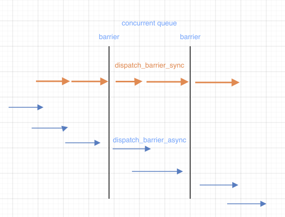

本文属于多线程系列：
多线程探索一-概念
多线程探索二-GCD
多线程探索三-NSOperation
多线程探索四-锁
概念
什么是GCD
Execute code concurrently on multicore hardware by submitting work to dispatch queues managed by the system
通过提交工作到由系统管理的调度队列，在多核硬件上并发执行代码。
Grand Central Dispatch（GCD） 是 Apple 开发的一个多核编程的较新的解决方法。它主要用于优化应用程序以支持多核处理器以及其他对称多处理系统。它是一个在线程池模式的基础上执行的并发任务。在 Mac OS X 10.6 雪豹中首次推出，也可在 iOS 4 及以上版本使用
优点
- GCD自动管理线程的生命周期(创建/调度/销毁)
- 不需要单独管理，直接使用API执行任务即可
API讲解
dispatch_barrier 栅栏
顾名思义，它起到了一个栅栏的作用，栅栏任务一定是在当前队列的任务完成之后开始，栅栏任务全部执行完之后才会开始之后的任务
栅栏函数的执行一定是要等到上一个栅栏任务完成之后才会开始下一个

那么利用栅栏函数我们可以做些什么呢？
- 实现高效率的数据访问和文件读写
- 避免数据竞争，即线程安全的读写
github上传了一个利用dispatch_barrier实现了一个多读单写的数组，当然这只是一个Demo
1 | dispatch_barrier_async |
1 | dispatch_barrier_sync |
dispatch_semaphore
信号量 通过计数来控制线程的开关, 计数小于0时阻塞线程，当计数大于等于0后可通过
- dispatch_semaphore_create 创建信号量
- dispatch_semaphore_signal 发送信号，信号+1
- dispatch_semaphore_wait 使信号量-1，当小于0时，阻塞线程
信号量的使用场景
- 异步任务变成同步执行，保持线程同步
- 作为线程锁，保证线程安全
1 | dispatch_queue_t queue = dispatch_queue_create("test", DISPATCH_QUEUE_CONCURRENT); |
1 | 2021-08-22 00:37:54.097070+0800 GDDemo[80131:5289843] current thread <NSThread: 0x6000022f4400>{number = 1, name = main} |
dispatch_group
- dispatch_group_async 相当于 dispatch_async+dispatch_group_enter/dispatch_group_leave的组合
- dispatch_group_enter/dispatch_group_leave 当使用dispatch_async时，调用这两个方法通知group有任务加入/离开
- dispatch_group_notify group中任务完成后调用
- dispatch_group_wait 先阻塞线程不让其向下执行，等到group内的任务执行完之后继续向下执行。
dispatch_after
1 | dispatch_queue_t queue = dispatch_queue_create("test", DISPATCH_QUEUE_CONCURRENT); |
打印结果
1 | 2021-08-21 23:43:24.588899+0800 GDDemo[79102:5235427] dispatch_sync at thread <NSThread: 0x600001edc700>{number = 1, name = main} |
dispatch_queue_t queue = dispatch_queue_create("test", DISPATCH_QUEUE_CONCURRENT);
dispatch_async(queue, ^{
NSLog(@"dispatch_async thread %@", [NSThread currentThread]);
[self performSelector:@selector(test) withObject:nil afterDelay:2];
});
NSLog(@"dispatch_async end thread %@", [NSThread currentThread]);
- (void)test {
NSLog(@"test at thread %@", [NSThread currentThread]);
}1 | 上面的代码，test函数永远不会执行，这是为什么呢？ |
2021-08-22 14:05:38.913990+0800 GDDemo[87282:5839362] dispatch_async end thread <NSThread: 0x600000110400>{number = 1, name = main}
2021-08-22 14:05:38.914842+0800 GDDemo[87282:5839511] dispatch_async thread <NSThread: 0x60000015d380>{number = 3, name = (null)}
1 |
|
dispatch_once_t one;
dispatch_once(&one, ^{
NSLog(@”1 at thread %@”, [NSThread currentThread]);
});
1 |
|
dispatch_queue_t queue = dispatch_queue_create("test", DISPATCH_QUEUE_CONCURRENT);
CFAbsoluteTime currentTime0 = CFAbsoluteTimeGetCurrent();
for (int i ; i < 10000; i++) { }
CFAbsoluteTime totalTime0 = CFAbsoluteTimeGetCurrent() - currentTime0;
NSLog(@"for loop total time is %f", totalTime0);
CFAbsoluteTime currentTime1 = CFAbsoluteTimeGetCurrent();
dispatch_apply(10000, queue, ^(size_t index) {
});
CFAbsoluteTime totalTime1 = CFAbsoluteTimeGetCurrent() - currentTime1;
NSLog(@"dispatch_apply total time is %f", totalTime1);
CFAbsoluteTime currentTime2 = CFAbsoluteTimeGetCurrent();
dispatch_sync(queue, ^{
for (int i ; i < 10000; i++) { }
});
CFAbsoluteTime totalTime2 = CFAbsoluteTimeGetCurrent() - currentTime2;
NSLog(@"dispatch_sync total time is %f", totalTime2);1 |
|
2021-08-22 00:18:26.256352+0800 GDDemo[79814:5271453] for loop total time is 0.000017
2021-08-22 00:18:26.256790+0800 GDDemo[79814:5271453] dispatch_apply total time is 0.000249
2021-08-22 00:18:26.256949+0800 GDDemo[79814:5271453] dispatch_sync total time is 0.000010
看到这个结果我还挺奇怪的，dispatch_apply反而是最耗时的。